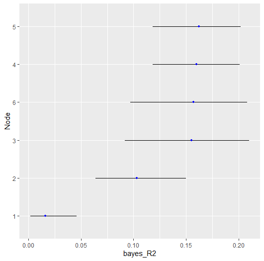

Predictability: Binary, Ordinal, and Continuous
Donny Williams
5/20/2020
Source:vignettes/predictability.Rmd
predictability.RmdBackground
This vignette describes a new feature to BGGM
(2.0.0) that allows for computing network predictability
for binary and ordinal data. Currently the available option is Bayesian
(Gelman et al. 2019).
R packages
# need the developmental version
if (!requireNamespace("remotes")) {
install.packages("remotes")
}
# install from github
remotes::install_github("donaldRwilliams/BGGM")
library(BGGM)Binary
The first example looks at Binary data, consisting of 1190
observations and 6 variables. The data are called
women_math and the variable descriptions are provided in
BGGM.
The model is estimated with
# binary data
Y <- women_math
# fit model
fit <- estimate(Y, type = "binary")and then predictability is computed
r2 <- predictability(fit)
# print
r2
#> BGGM: Bayesian Gaussian Graphical Models
#> ---
#> Metric: Bayes R2
#> Type: binary
#> ---
#> Estimates:
#>
#> Node Post.mean Post.sd Cred.lb Cred.ub
#> 1 0.016 0.012 0.002 0.046
#> 2 0.103 0.023 0.064 0.150
#> 3 0.155 0.030 0.092 0.210
#> 4 0.160 0.021 0.118 0.201
#> 5 0.162 0.022 0.118 0.202
#> 6 0.157 0.028 0.097 0.208
#> ---There are then two options for plotting. The first is with error
bars, denoting the credible interval (i.e., cred),
plot(r2,
type = "error_bar",
size = 4,
cred = 0.90)
and the second is with a ridgeline plot
plot(r2,
type = "ridgeline",
cred = 0.50)
Ordinal
In the following, the ptsd data is used (5-level
Likert). The variable descriptions are provided in
BGGM. This is based on the polychoric partial
correlations, with
computed from the corresponding correlations (due to the correspondence
between the correlation matrix and multiple regression).
Y <- ptsd
fit <- estimate(Y + 1, type = "ordinal")The only change is switching type from "binary to
ordinal. One important point is the + 1. This
is required because for the ordinal approach the first category must be
1 (in ptsd the first category is coded as 0).
r2 <- predictability(fit)
# print
r2
#> BGGM: Bayesian Gaussian Graphical Models
#> ---
#> Metric: Bayes R2
#> Type: ordinal
#> ---
#> Estimates:
#>
#> Node Post.mean Post.sd Cred.lb Cred.ub
#> 1 0.487 0.049 0.394 0.585
#> 2 0.497 0.047 0.412 0.592
#> 3 0.509 0.047 0.423 0.605
#> 4 0.524 0.049 0.441 0.633
#> 5 0.495 0.047 0.409 0.583
#> 6 0.297 0.043 0.217 0.379
#> 7 0.395 0.045 0.314 0.491
#> 8 0.250 0.042 0.173 0.336
#> 9 0.440 0.048 0.358 0.545
#> 10 0.417 0.044 0.337 0.508
#> 11 0.549 0.048 0.463 0.648
#> 12 0.508 0.048 0.423 0.607
#> 13 0.504 0.047 0.421 0.600
#> 14 0.485 0.043 0.411 0.568
#> 15 0.442 0.045 0.355 0.528
#> 16 0.332 0.039 0.257 0.414
#> 17 0.331 0.045 0.259 0.436
#> 18 0.423 0.044 0.345 0.510
#> 19 0.438 0.044 0.354 0.525
#> 20 0.362 0.043 0.285 0.454
#> ---Here is the error_bar plot.
plot(r2)
Note that the plot object is a ggplot which allows for
further customization (e.g,. adding the variable names, a title,
etc.).
Continuous
It is quite common to compute predictability assuming that the data are Gaussian. In the context of Bayesian GGMs, this was introduced in (Williams 2018). This can also be implemented in BGGM.
# fit model
fit <- estimate(Y)
# predictability
r2 <- predictability(fit)type is missing which indicates that
continuous is the default.
Note
for binary and ordinal data is computed for the underlying latent
variables. This is also the case when type = "mixed (a
semi-parametric copula). In future releases, there will be support for
predicting the variables on the observed scale.